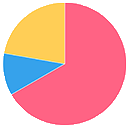
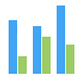
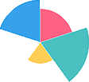

<ion-header class="centrado">
  <ion-toolbar>
  </ion-toolbar>
</ion-header>


<ion-content>

  <!-- LEFT MENU -->
  <p-sidebar [(visible)]="leftMenu" [modal]=false>
    <h1 style="font-weight:normal">Altas</h1>
    <ion-button *ngIf="currentUser.perfil=='admin'" expand="full" (click)="leftMenu = false"
      (click)="mostrarForm('supervisor')">Alta de Supervisor
    </ion-button>
    <ion-button expand="full" (click)="leftMenu = false" (click)="mostrarForm('empleado')"><i class="pi pi-user-plus"></i>Alta de Empleado</ion-button>
    <ion-button expand="full" (click)="leftMenu = false" (click)="mostrarForm('cliente')"><i class="pi pi-users"></i>Alta de Cliente
    </ion-button>
    <ion-button expand="full" (click)="leftMenu = false" (click)="mostrarListaDeClientesAVerificar()" (click)="mostrarUsuariosAVerificar=true"><i class="pi pi-users"></i>Nuevos Clientes
      <ion-badge *ngIf="listaUsuariosSinVerificar.length>=1" color="secondary">{{listaUsuariosSinVerificar.length}}</ion-badge>
    </ion-button>
  </p-sidebar>
  <ion-icon id="hamburgerLeftMenu" class="hamburgerMenu" name="menu-outline" pButton type="button"
    (click)="leftMenu = true" (click)="rightMenu=false" (click)="mostrarGraficoEstadistico=false" (click)="mostrarFormRegistro=false"(click)="mostrarUsuariosAVerificar=false"></ion-icon>
  <!-- FIN LEFT MENU -->

  <!-- RIGHT MENU -->
  <p-sidebar [(visible)]="rightMenu" position="right" [baseZIndex]="10000" [modal]=false>
    <h1 style="font-weight:normal">Estadisticas</h1>
    <ion-button expand="full" (click)="leftMenu = false" (click)="mostrarGrafico('pie')"> Grafico de torta
    </ion-button>
    <ion-button expand="full" (click)="leftMenu = false" (click)="mostrarGrafico('bar')">Grafico de barras
    </ion-button>
    <ion-button expand="full" (click)="leftMenu = false" (click)="mostrarGrafico('polarArea')">Grafico de area
    </ion-button>
  </p-sidebar>
  <ion-icon id="hamburgerRightMenu" class="hamburgerMenu" name="menu-outline" (click)="rightMenu=true"
    (click)="leftMenu=false" (click)="mostrarFormRegistro=false" (click)="mostrarGraficoEstadistico=false" (click)="mostrarUsuariosAVerificar=false"></ion-icon>
  <!-- FIN RIGHT MENU -->

  <app-graficos *ngIf="mostrarGraficoEstadistico" [tipoDeGrafico]="graficoSeleccionado"></app-graficos>
  <app-form-alta *ngIf="mostrarFormRegistro" [user]='user'></app-form-alta> 
  <app-lista-de-usuarios-averificar *ngIf="mostrarUsuariosAVerificar" [lista]="listaUsuariosSinVerificar"></app-lista-de-usuarios-averificar>

</ion-content>